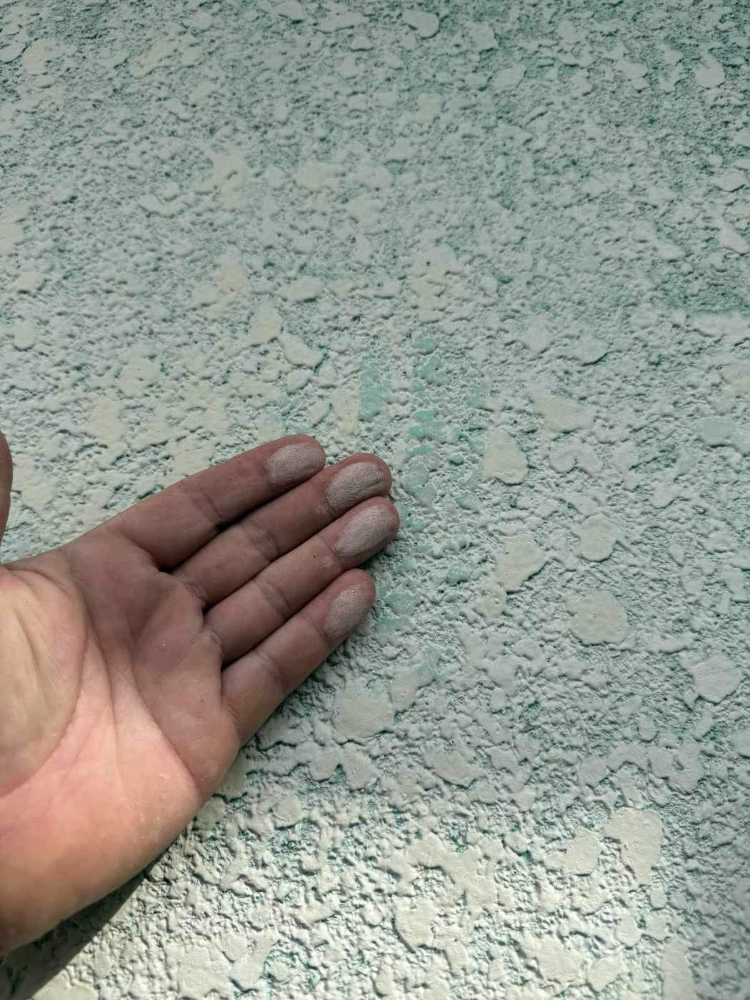
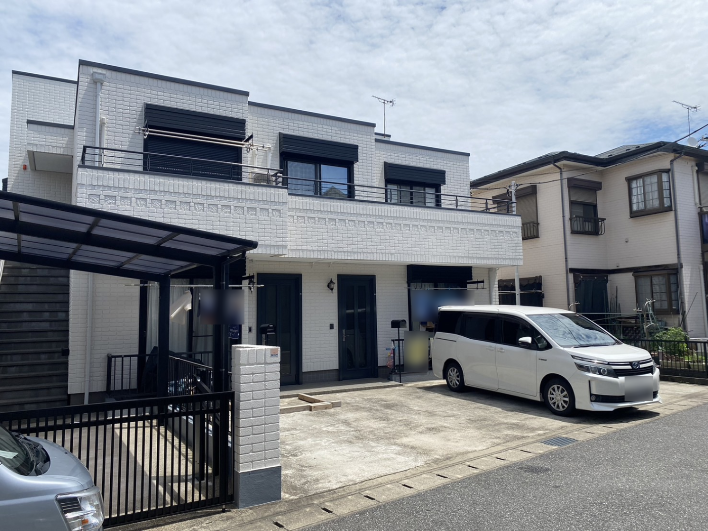
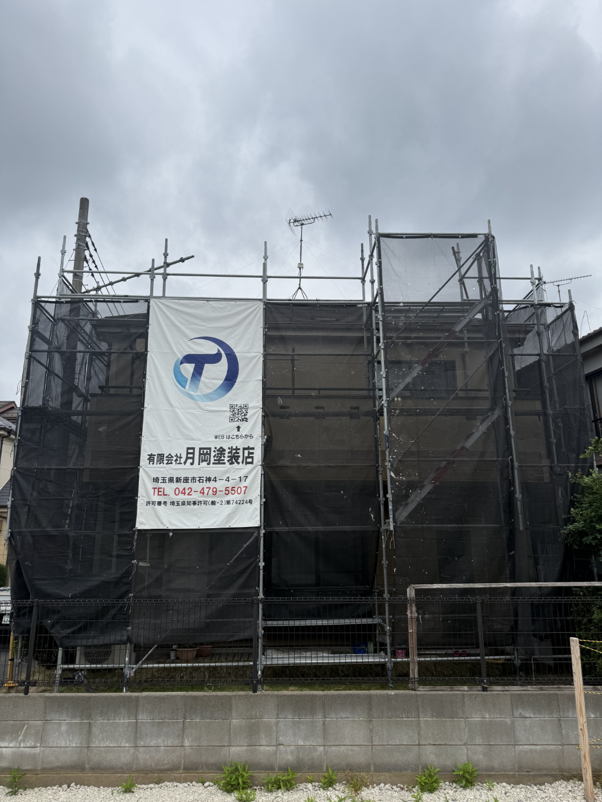
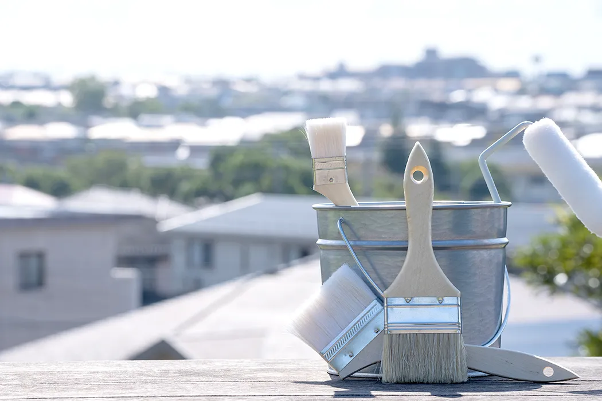
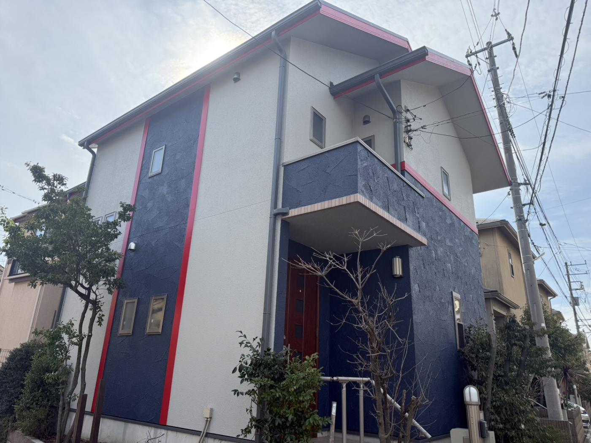

現場に立つ人たち
お住まいに伺うのは、この4人です。誰が来て、何を担当し、どこに手をかけるのか。塗装店を選ぶ材料として、ひとりずつご紹介します。
お住まいに毎日出入りするのは、この4人です。
工事は2週間前後、家の周りに人が立ち続けます。どんな人間が来るのかを、契約する前に知っておいていただきたいと思っています。


01
代表診断もお見積りも、
私が直接伺います
お問い合わせをいただいたら、まず私が現地に伺って外壁と屋根を見ます。営業担当が話を聞いて、後から職人が来る、という進め方はしていません。
Q. お客さまに必ずお伝えすることは？売り込みに来たのではなく、状態を見に来たということです。塗り替えの時期でなければ、そのまま正直に申し上げます。

02
職長工事の良し悪しは、
段取りで決まります
足場をいつ組むか、洗浄をいつやるか、乾燥をどれだけ取るか。工程表を組む段階で、その工事がうまくいくかはほとんど決まっています。
Q. 工期が延びることもありますか？あります。急いで塗った現場は必ず後で分かるので、雨の日は塗りません。延びる場合は理由と新しい工程を先にお伝えします。


03
塗装職人下塗りに、
いちばん時間をかけます
傷んだ外壁は下塗り材をどんどん吸い込みます。1回で止めると仕上げの塗料が下地に取られ、必要な膜厚が出ません。吸い込みが止まるまで重ねます。
Q. 仕上がりの差は、どこで出ますか？5年後、10年後です。塗り終わった直後はどんな工事でもきれいに見えます。差が出るのは、見えなくなった工程の分だけです。
04
塗装職人外壁だけでは、
家はきれいになりません
雨樋、破風、軒天、水切り、鉄部。外壁を新しくしても、そこが古いままだと全体が締まりません。付帯部までまとめて仕上げるのが基本です。
Q. 付帯部だけの塗り直しもできますか？できます。ただ足場が必要になる場合は、外壁と一緒にされたほうが結果的にお安くなります。診断のうえでご提案します。
この職人たちが、お住まいに伺います。
現地診断・お見積りは無料です。まずは状態を見せてください。